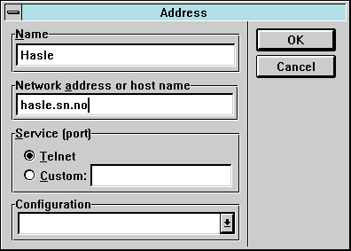

Aktuell programvare for brukere av SN Internett
Her har vi samlet en del programmer spesielt for brukere av SN Internett.
Det er programmer som ligger fritt tilgjengelig på nettet som "shareware"
eller "freeware".
Du kan hente disse filene ved å klikke på dem i Netscape.
Dersom Netscape spør hva som skal gjøres skal du velge
"save to disk".
ftp
Selv om Netscape Navigator har en ftp-klient innebygget ønsker mange
en kraftigere ftp-klient. Den vi anbefaler er John A. Junods ws_ftp.
Etter at du har hentet zip-arkivet kan du pakke det ut i den
med katalogen hvor du valgte å installere SN Internett
(vanligvis C:\NETSCAPE). Deretter installerer du
programobjektet ws_ftp.exe i programgruppen.
SN Internett (velg "ny" i fil-menyen i Windows).
Deretter er du ws_ftp nesten klar til bruk, men gjør for
sikkerhets skyld følgende:
- Start ws_ftp ved å dobbeltklikke på ws_ftp-ikonet.
- Du får nå opp et panel med overskriften "Session profile".
Vi har ikke satt opp programmet med riktig e-post-adresse,
så trykk på knappen merket "cancel".
- Nederst på hovedpanelet finner du en rad knapper. Trykk på
den som er merket "Options".
- Et nytt sett med knapper kommer opp. Nå trykker du på
"Program options".
- I feltet for e-post-adresse i panelet som nå kommer opp
står ordet "guest". Bytt ut dette med din virkelige
e-post-adresse brukernavn@sn.no.
- Trykk på knappen merket "Save".
- Nå kan du klikke på knappen merket "Connect" for å koble
deg opp til en maskin på Internett.
telnet
Telnet brukes for å koble seg opp med en virtuell terminal
mot en maskin på Internett.
Du har bruk for telnet når du skal logge deg på en Unix-maskin
for å skifte passord, spille trivia,
eller når du skal redigere på filer (f.eks.
dine egne hjemmesider) som ligger lagret på Unix-maskinen.
Ewan telnet fra
Peter Zander
er den beste telnet-klienten for Windows. Her finner du den
aller siste versjonen, men en rimelig oppdatert versjon
finnes på SN ftp-område:
Når du har lastet ned arkivet må du gjøre følgende:
- Pakk ut zip-arkivet i en temp-katalog (ikke i katalogen der
du vil installere programmet.
- Fra Windows, start programmet install.exe som lå i arkivet.
- Når install spør hvor programmet skal installes, bytt ut
standardområdet C:\EWAN med katalogen hvor du valgte å
installere SN Internett (vanligvis C:\NETSCAPE).
- Dersom installasjonsprogrammet spør om bestemte DLL-er skal
overskrives er det tryggest å svare "nei".
- Når installasjonen er avsluttet har det blitt opprettet en ny
programgruppe: EWAN, winsock telnet med to ikoner.
Flytt disse over (drag & drop) over i programgruppen
SN Internett og slett den nå tomme gruppen
EWAN, winsock telnet.
- Start ewan med å dobbeltklikke på Ewan-ikonet.
- Før du kan ta Ewan i bruk må du fylle ut navnet og adressen til
vertsmaskinen du skal koble deg opp mot. Du gjør det ved å
klikke på knappen merket "New". Du får da opp et panel som
dette:

- I feltet merket "Name" fyller du inn et kortnavn for vertsmaskinen.
I feltet merket "Network address or host name" fyller du inn
maskinens DNS-adresse. Deretter klikker du på "OK".
- Dersom ting nå er riktig satt opp vil systemet nå ringe opp
SN Internett og la deg logge inn på den vertsmaskinen som
er angitt.
Du bør imidlertid også sette opp Netscape Navigator til å bruke Ewan
til å snakke med telnet-verter. Det gjør du som følger:
- Start Netscape.
- På menyenlinja velger du Options, og deretter Preferences.
- Klikk så på Applications and directories.
- Du får nå opp et felt hvor du kan fylle ut Telnet application.
Her skriver du den fullstendige stien til ewan progamfil
(for eksempel: C:\NETSCAPE\EWAN.EXE dersom du har
valgt standardinstallasjon av SN Internett).
- Klikk OK.
Ewan telnet lar deg endre størrelsen på terminalvinduet.
En kjekk Unix-kommando å huske på når du er logget på er resize,
som gjør at skjermorienterte programmer du starter på Unix utnytter
den virkelige terminalstørrelsen.
Diverse TCP/IP-baserte småprogrammer
Disse småprogrammene er for spesielt interesserte.
De kan blant annet brukes til feilsøking og til å
hente informasjon inn fra nettet.
- finger.zip (19 Kb)
Program for sjekke om en bestemt bruker finnes på en gitt maskin.
- hopchkw.zip (13 Kb)
Sjekk hvor mange "hopp" det er til en gitt maskin.
- wsarchie.zip (162 Kb)
Let i Internett ftp-arkiver etter en bestemt fil.
- ws_ping.zip (23 Kb)
Sjekk om en bestemt maskin svarer på anrop.
Hjelpeapplikasjoner
Hjelpeapplikasjoner (helper applications) brukes av Netscape Navigator
for å vise fram multimedia datatyper ved hjelp av externe programmer.
- mpegplay.zip (155 Kb)
Dette programmet spiller av levende animasjoner (video) kodet på MPEG-formatet.
Du trenger imidlertid å ha installert WIN32S utvidelsene til Windows 3.11
for at mpegplay skal fungere.
- wplany11.zip (30 Kb)
Dette er et program som klarer å spille av svært mange ulike lydformater.
Du kan installere det som et supplement til (eller erstatning for) programmet
naplayer.exe som følger med SN Internett.
Du kan hente en eller begge disse zip-arkivene over til din egen
maskin og pakke dem ut i katalogen der du har installert SN Internett.
Oppdatert, 1995 des. 10, gisle@a.sn.no